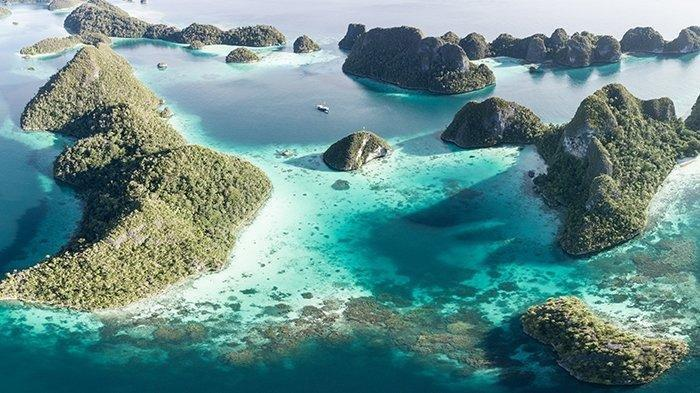
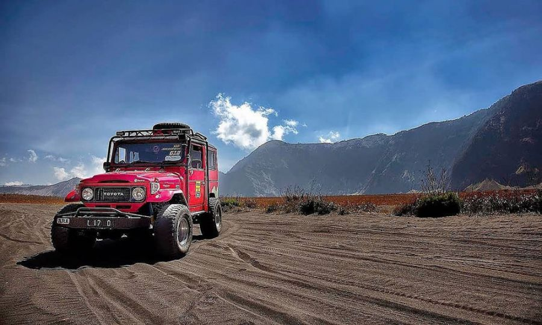
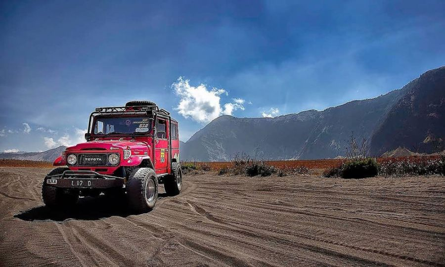

Popular Destinations


Bali
Bali, pulau kecil di Indonesia, telah lama menjadi destinasi impian para wisatawan dari seluruh dunia.Keindahan
Alamnya yang menakjubkan, budaya yang kaya, dan keramahan penduduknya membuat Bali begitu istimewa.

Raja Ampat
Raja Ampat, sebuah gugusan pulau di Papua Barat, Indonesia, adalah surga bagi para penyelam dan pecinta alam.
Dikenal sebagai salah satu destinasi wisata bahari terbaik di dunia, Raja Ampat menawarkan keindahan alam bawah
laut yang tak tertandingi dengan terumbu karang yang berwarna-warni dan beragam biota laut.

Candi Borobudur
Candi Borobudur, sebuah keajaiban dunia yang terletak di Magelang, Jawa Tengah, adalah monumen Buddha terbesar di.
duniaDengan arsitektur yang megah dan relief-relief yang menceritakan kisah kehidupan Buddha candi ini menjadi saksi
bisu peradaban Hindu-Buddha di Indonesia

Pulau Seribu
Pulau Seribu adalah gugusan pulau yang terletak di utara Jakarta, menawarkan keindahan alam bawah laut yang.
menakjubkan.Dengan air laut yang jernih, terumbu karang yang berwarna-warni, dan beragam jenis ikan,
pulau ini menjadi surga bagi para penyelam dan snorkelers.

Banda Neira
Banda Neira, sebuah pulau kecil di Maluku, Indonesia, adalah perpaduan unik antara sejarah dan keindahan alam.
Banda Neira menawarkan pengalaman wisata yang tak terlupakan bisa menjelajahi benteng-benteng peninggalan kolonial
seperti Benteng Nassau, yang menyimpan cerita sejarah yang kaya.keindahan alam bawah laut Banda Neira juga sangat
memukau dengan terumbu karang yang masih alami dan beragam biota laut.

Labuan Bajo
Labuan Bajo, sebuah surga tersembunyi di Nusa Tenggara Timur, adalah destinasi impian bagi para pecinta alam
dan petualang.Terkenal dengan keindahan alam bawah lautnya yang menakjubkan,Labuan Bajo menawarkan pengalaman
menyelam dan snorkeling yang tak terlupakan

Pantai Tanjung Kelayang
Pantai Tanjung Kelayang di Belitung menawarkan keindahan alam yang memukau dengan hamparan pasir putih yang
lembut dan batu-batu granit yang unik.Pantai ini terkenal dengan keindahan alamnya yang sering dijadikan
latar belakang film Laskar Pelangi.
 

Gunung Bromo
Gunung Bromo adalah salah satu ikon wisata di Indonesia, terkenal dengan keindahan alamnya yang dramatis.
Terletak di Taman Nasional Bromo Tengger Semeru, gunung berapi aktif ini menawarkan pemandangan spektakuler,
seperti kawah yang masih aktiflautan pasir yang luas, dan sunrise yang memukau dari Penanjakan


Pulau Morotai
Pulau Morotai adalah surga tersembunyi di Maluku Utara yang menawarkan keindahan alam yang masih perawan.
Terkenal dengan pantai pasir putihnya yang lembut, air lautnya yang jernih,dan terumbu karang yang
berwarna-warni,pulau ini menjadi surga bagi para penyelam dan snorkelers.


Pantai Kuta Mandalika Lombok